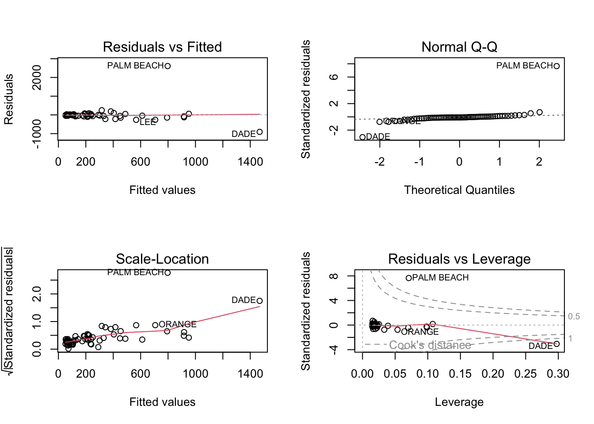

house_price_2<-house.selling.price.2# Calculate the correlation matrixcorrelation_matrix <-cor(house_price_2)print(correlation_matrix, border =TRUE, lwd =2)
P S Be Ba New
P 1.0000000 0.8988136 0.5902675 0.7136960 0.3565540
S 0.8988136 1.0000000 0.6691137 0.6624828 0.1762879
Be 0.5902675 0.6691137 1.0000000 0.3337966 0.2672091
Ba 0.7136960 0.6624828 0.3337966 1.0000000 0.1820651
New 0.3565540 0.1762879 0.2672091 0.1820651 1.0000000
Code
fit <-lm(P ~ ., data = house_price_2)backward <-step(fit, direction ="backward")
Start: AIC=524.7
P ~ S + Be + Ba + New
Df Sum of Sq RSS AIC
- Be 1 131 23684 523.21
<none> 23553 524.70
- Ba 1 3092 26645 534.17
- New 1 6432 29985 545.15
- S 1 35419 58972 608.06
Step: AIC=523.21
P ~ S + Ba + New
Df Sum of Sq RSS AIC
<none> 23684 523.21
- Ba 1 3550 27234 534.20
- New 1 6349 30033 543.30
- S 1 54898 78582 632.75
Code
summary(backward)
Call:
lm(formula = P ~ S + Ba + New, data = house_price_2)
Residuals:
Min 1Q Median 3Q Max
-34.804 -9.496 0.917 7.931 73.338
Coefficients:
Estimate Std. Error t value Pr(>|t|)
(Intercept) -47.992 8.209 -5.847 8.15e-08 ***
S 62.263 4.335 14.363 < 2e-16 ***
Ba 20.072 5.495 3.653 0.000438 ***
New 18.371 3.761 4.885 4.54e-06 ***
---
Signif. codes: 0 '***' 0.001 '**' 0.01 '*' 0.05 '.' 0.1 ' ' 1
Residual standard error: 16.31 on 89 degrees of freedom
Multiple R-squared: 0.8681, Adjusted R-squared: 0.8637
F-statistic: 195.3 on 3 and 89 DF, p-value: < 2.2e-16
The variable to be deleted first in backward elimination would be “Beds” since it has the highest p-value of 0.487.
1B:
Code
forward_dir <-step(fit, direction ="forward")
Start: AIC=524.7
P ~ S + Be + Ba + New
Code
summary(forward_dir)
Call:
lm(formula = P ~ S + Be + Ba + New, data = house_price_2)
Residuals:
Min 1Q Median 3Q Max
-36.212 -9.546 1.277 9.406 71.953
Coefficients:
Estimate Std. Error t value Pr(>|t|)
(Intercept) -41.795 12.104 -3.453 0.000855 ***
S 64.761 5.630 11.504 < 2e-16 ***
Be -2.766 3.960 -0.698 0.486763
Ba 19.203 5.650 3.399 0.001019 **
New 18.984 3.873 4.902 4.3e-06 ***
---
Signif. codes: 0 '***' 0.001 '**' 0.01 '*' 0.05 '.' 0.1 ' ' 1
Residual standard error: 16.36 on 88 degrees of freedom
Multiple R-squared: 0.8689, Adjusted R-squared: 0.8629
F-statistic: 145.8 on 4 and 88 DF, p-value: < 2.2e-16
In forward selection, the variable with the lowest p-value is added first, indicating a stronger evidence of its influence on the response variable.
Considering the full model, we observe that the variable “S” has the lowest p-value (< 2e-16), demonstrating its high significance in predicting the house price. Therefore, if we were to employ forward selection based on p-values, the variable “S” would be added first to the model. Subsequently, “Ba” would be added, followed by “New,” and finally “Be.” It is worth noting that none of the other variables exhibit p-values lower than “S,” justifying their addition order.
C: When additional variables are included in the regression model, the predictive power of “Beds” in determining the “Price” diminishes. This could be attributed to the fact that “Baths” and “Size” have a strong correlation with “Price,” indicating that they might already account for some of the influence that “Beds” has on the outcome. Furthermore, a high correlation between “Size” and “Beds” suggests the presence of multicollinearity, where these variables provide redundant information to the model.
D:
Code
summary(lm(P ~ S, data = house_price_2))
Call:
lm(formula = P ~ S, data = house_price_2)
Residuals:
Min 1Q Median 3Q Max
-56.407 -10.656 2.126 11.412 85.091
Coefficients:
Estimate Std. Error t value Pr(>|t|)
(Intercept) -25.194 6.688 -3.767 0.000293 ***
S 75.607 3.865 19.561 < 2e-16 ***
---
Signif. codes: 0 '***' 0.001 '**' 0.01 '*' 0.05 '.' 0.1 ' ' 1
Residual standard error: 19.47 on 91 degrees of freedom
Multiple R-squared: 0.8079, Adjusted R-squared: 0.8058
F-statistic: 382.6 on 1 and 91 DF, p-value: < 2.2e-16
Code
summary(lm(P ~ S+New, data = house_price_2))
Call:
lm(formula = P ~ S + New, data = house_price_2)
Residuals:
Min 1Q Median 3Q Max
-47.207 -9.763 -0.091 9.984 76.405
Coefficients:
Estimate Std. Error t value Pr(>|t|)
(Intercept) -26.089 5.977 -4.365 3.39e-05 ***
S 72.575 3.508 20.690 < 2e-16 ***
New 19.587 3.995 4.903 4.16e-06 ***
---
Signif. codes: 0 '***' 0.001 '**' 0.01 '*' 0.05 '.' 0.1 ' ' 1
Residual standard error: 17.4 on 90 degrees of freedom
Multiple R-squared: 0.8484, Adjusted R-squared: 0.845
F-statistic: 251.8 on 2 and 90 DF, p-value: < 2.2e-16
Code
summary(lm(P ~ ., data = house_price_2))
Call:
lm(formula = P ~ ., data = house_price_2)
Residuals:
Min 1Q Median 3Q Max
-36.212 -9.546 1.277 9.406 71.953
Coefficients:
Estimate Std. Error t value Pr(>|t|)
(Intercept) -41.795 12.104 -3.453 0.000855 ***
S 64.761 5.630 11.504 < 2e-16 ***
Be -2.766 3.960 -0.698 0.486763
Ba 19.203 5.650 3.399 0.001019 **
New 18.984 3.873 4.902 4.3e-06 ***
---
Signif. codes: 0 '***' 0.001 '**' 0.01 '*' 0.05 '.' 0.1 ' ' 1
Residual standard error: 16.36 on 88 degrees of freedom
Multiple R-squared: 0.8689, Adjusted R-squared: 0.8629
F-statistic: 145.8 on 4 and 88 DF, p-value: < 2.2e-16
Code
summary(lm(P ~ . -Be, data = house_price_2))
Call:
lm(formula = P ~ . - Be, data = house_price_2)
Residuals:
Min 1Q Median 3Q Max
-34.804 -9.496 0.917 7.931 73.338
Coefficients:
Estimate Std. Error t value Pr(>|t|)
(Intercept) -47.992 8.209 -5.847 8.15e-08 ***
S 62.263 4.335 14.363 < 2e-16 ***
Ba 20.072 5.495 3.653 0.000438 ***
New 18.371 3.761 4.885 4.54e-06 ***
---
Signif. codes: 0 '***' 0.001 '**' 0.01 '*' 0.05 '.' 0.1 ' ' 1
Residual standard error: 16.31 on 89 degrees of freedom
Multiple R-squared: 0.8681, Adjusted R-squared: 0.8637
F-statistic: 195.3 on 3 and 89 DF, p-value: < 2.2e-16
Code
full_model <-lm(P ~ ., data = house.selling.price.2)model_noBeds <-lm(P ~ .-Be, data = house.selling.price.2)model_noBeds_noBaths <-lm(P ~ S + New, data = house.selling.price.2)model_size_only <-lm(P ~ S, data = house.selling.price.2)
It is important to note that when evaluating the models based on R-squared and Adjusted R-squared, higher values indicate better model fit. However, in the case of PRESS, AIC, and BIC, lower values indicate better performance. Considering these criteria, the model that does not include the variable “Beds” is considered better. This conclusion is supported by the higher adjusted R-squared value and lower values of PRESS, AIC, and BIC for the model without “Beds”.
tree_model <-lm(Volume ~ Girth + Height, data = trees)summary(tree_model)
Call:
lm(formula = Volume ~ Girth + Height, data = trees)
Residuals:
Min 1Q Median 3Q Max
-6.4065 -2.6493 -0.2876 2.2003 8.4847
Coefficients:
Estimate Std. Error t value Pr(>|t|)
(Intercept) -57.9877 8.6382 -6.713 2.75e-07 ***
Girth 4.7082 0.2643 17.816 < 2e-16 ***
Height 0.3393 0.1302 2.607 0.0145 *
---
Signif. codes: 0 '***' 0.001 '**' 0.01 '*' 0.05 '.' 0.1 ' ' 1
Residual standard error: 3.882 on 28 degrees of freedom
Multiple R-squared: 0.948, Adjusted R-squared: 0.9442
F-statistic: 255 on 2 and 28 DF, p-value: < 2.2e-16
B:
Code
par(mfrow =c(2,3))plot(tree_model, which =1:6)
The violation that stands out the most from the first plot is the violation of the linearity assumption. In the plot of fitted values vs. residuals, the expected pattern is a relatively straight line along the horizontal axis. However, in this case, the red line follows a U-shaped pattern. This violation can be attributed to the relationship between the volume and the square of the diameter. The current model uses only the diameter (Girth) as a predictor, failing to capture the quadratic nature of the relationship. To address this issue, we can explore the inclusion of a quadratic term in the model.
3A:
Code
model <-lm(Buchanan ~ Bush, data = florida)par(mfrow =c(2, 2))plot(model)

3B:
Code
florida$log_Bush <-log(florida$Bush)florida$log_Buchanan <-log(florida$Buchanan)# Perform simple linear regression with log-transformed variablesmodel <-lm(log_Buchanan ~ log_Bush, data = florida)# Generate regression diagnostic plotspar(mfrow =c(2, 2))plot(model)
Source Code
---title: "Homework5"author: "Sai Padma pothula"desription: ""date: "05/02/2023"format: html: toc: true code-fold: true code-copy: true code-tools: truecategories: - Homework 5 - sai Pothula---```{r}ibrary(smss)library(alr4)library(magrittr)``````{r}data(house.selling.price.2, package="smss")data1 <- house.selling.price.2head(house.selling.price.2,10)names(data1) <-c('Price', 'Size', 'Beds', 'Baths', 'New')```1A:```{r}house_price_2<-house.selling.price.2# Calculate the correlation matrixcorrelation_matrix <-cor(house_price_2)print(correlation_matrix, border =TRUE, lwd =2)``````{r}fit <-lm(P ~ ., data = house_price_2)backward <-step(fit, direction ="backward")summary(backward)```The variable to be deleted first in backward elimination would be "Beds" since it has the highest p-value of 0.487.1B:```{r}forward_dir <-step(fit, direction ="forward")summary(forward_dir)```In forward selection, the variable with the lowest p-value is added first, indicating a stronger evidence of its influence on the response variable. Considering the full model, we observe that the variable "S" has the lowest p-value (< 2e-16), demonstrating its high significance in predicting the house price. Therefore, if we were to employ forward selection based on p-values, the variable "S" would be added first to the model. Subsequently, "Ba" would be added, followed by "New," and finally "Be." It is worth noting that none of the other variables exhibit p-values lower than "S," justifying their addition order.C:When additional variables are included in the regression model, the predictive power of "Beds" in determining the "Price" diminishes. This could be attributed to the fact that "Baths" and "Size" have a strong correlation with "Price," indicating that they might already account for some of the influence that "Beds" has on the outcome. Furthermore, a high correlation between "Size" and "Beds" suggests the presence of multicollinearity, where these variables provide redundant information to the model.D:```{r}summary(lm(P ~ S, data = house_price_2))``````{r}summary(lm(P ~ S+New, data = house_price_2))``````{r}summary(lm(P ~ ., data = house_price_2))``````{r}summary(lm(P ~ . -Be, data = house_price_2))``````{r}full_model <-lm(P ~ ., data = house.selling.price.2)model_noBeds <-lm(P ~ .-Be, data = house.selling.price.2)model_noBeds_noBaths <-lm(P ~ S + New, data = house.selling.price.2)model_size_only <-lm(P ~ S, data = house.selling.price.2)``````{r}rsquared <-function(fit) summary(fit)$r.squaredadj_rsquared <-function(fit) summary(fit)$adj.r.squaredPRESS <-function(fit) { pr <-residuals(fit)/(1-lm.influence(fit)$hat)sum(pr^2)}``````{r}models <-list(full_model, model_noBeds, model_noBeds_noBaths, model_size_only)data.frame(models =c('full_model', 'model_noBeds', 'model_noBeds&Baths', 'model_only_size'),rSquared =sapply(models, rsquared),adj_rSquared =sapply(models, adj_rsquared),PRESS =sapply(models, PRESS),AIC =sapply(models, AIC),BIC =sapply(models, BIC)) |>print()```It is important to note that when evaluating the models based on R-squared and Adjusted R-squared, higher values indicate better model fit. However, in the case of PRESS, AIC, and BIC, lower values indicate better performance. Considering these criteria, the model that does not include the variable "Beds" is considered better. This conclusion is supported by the higher adjusted R-squared value and lower values of PRESS, AIC, and BIC for the model without "Beds".E:Select model with no bed variable.2A:```{r}head(trees)``````{r}tree_model <-lm(Volume ~ Girth + Height, data = trees)summary(tree_model)```B:```{r}par(mfrow =c(2,3))plot(tree_model, which =1:6)```The violation that stands out the most from the first plot is the violation of the linearity assumption. In the plot of fitted values vs. residuals, the expected pattern is a relatively straight line along the horizontal axis. However, in this case, the red line follows a U-shaped pattern. This violation can be attributed to the relationship between the volume and the square of the diameter. The current model uses only the diameter (Girth) as a predictor, failing to capture the quadratic nature of the relationship. To address this issue, we can explore the inclusion of a quadratic term in the model.3A:```{r}model <-lm(Buchanan ~ Bush, data = florida)par(mfrow =c(2, 2))plot(model)```3B:```{r}florida$log_Bush <-log(florida$Bush)florida$log_Buchanan <-log(florida$Buchanan)# Perform simple linear regression with log-transformed variablesmodel <-lm(log_Buchanan ~ log_Bush, data = florida)# Generate regression diagnostic plotspar(mfrow =c(2, 2))plot(model)```